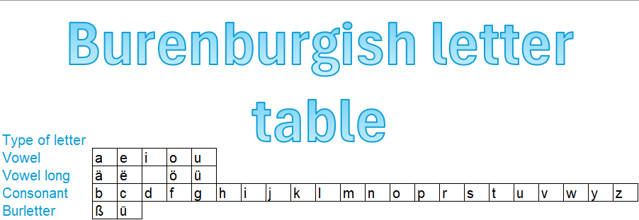

How does Burenburgish work?
Pronounciation:
- ä/ë/ö/ü is pronounced as a long vowel (such as nä being naa)
- Letter pronounciation is the same as English and constant.
- There are no silent letters. Pronounce each letter in a word.
Extra letters:
- The ß is a /ch/ sound, such as "Polißia" being "Polichia".
- The ῡ makes the same sound as the German ö, such as "Regardῡr" being "Regarduur"

Go back